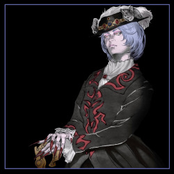

Lista de personagens que aparecem na franquia Castlevania. Todos os personagens estão listados aqui, não importa sua importância, gênero ou tendência.
Todos os itens (96)
Abram é um personagem em Castlevania: Order of Ecclesia. Ele é um das aldeões de Wygol e um distante descendente do Clã Belmont. Ele é um ex-ladrão bom no manuseio de remédios, poções e tónicos.

Abram era um bandido que encontrou salvação na cidade de Wygol e começou a trabalhar com remédios nela.
Actrise (魔女アクトリーセ, Majo Akutorīse, em inglês: Witch Actrise, em português: Bruxa Actrise) é uma grande antagonista em Castlevania 64 e Castlevania: Legacy of Darkness. Ela é uma bruxa que (ao lado de outras) busca a ressurreição de seu mestre, o Conde Drácula.
Actrise é uma mulher cuja ambição reside no poder e na beleza (dela própria, naturalmente). Em uma tentativa de cumprir seus desejos ganhando a imortalidade, Actrise se comprometeu a servir ao Drácula matando 100 crianças... entre as quais estava seu próprio filho. Ela se tornou um dos tenentes do Drácula junto com a Morte e Gilles de Rais, e juntos os três buscaram a ressurreição de seu Lorde das Trevas. Em algum momento durante este tempo, ela ao lado de Rais também começou a vampirizar J. A. Oldrey, forçando assim sua família, Mary e Henry, a cortar os laços com ele.
Durante a infiltração de Cornell no castelo escuro, Actrise apareceu apenas uma vez para provocar o homem-fera depois que este derrotou Gilles de Rais em um breve duelo, e também sugeriu ao lado de seu aliado que Cornell com suas habilidades de homem-fera seria um oponente digno para Drácula em relação ao objetivos deste último. Ela apareceu novamente somente depois que Drácula foi derrotado por Cornell. Ela estava presente na sala do trono enquanto a Morte sacrificava a forma de lobo de Cornell no ritual para reviver seu Lorde das Trevas.
Depois que Drácula renasceu como uma criança, os três tenentes conceberam um plano para impedir os dois caçadores de vampiros que tinham vindo para investigar os acontecimentos sombrios ao redor do castelo. A fim de deter os caçadores, Morte e Actrise começaram a distrair e impedir seu progresso pelo castelo, enquanto Gilles assumiu o papel de Drácula. Como colega praticante de magia, Actrise perseguiu Carrie. Ela ofereceria à garota a oportunidade de se juntar a ela, o que foi naturalmente recusado. Em um esforço posterior para quebrar o espírito da garota, Actrise fez Carrie lutar contra outro guerreiro Fernandez que havia sido transformado em vampiro.
Depois que Carrie escalou a Torre da Feitiçaria e alcançou o topo da Sala dos Relógios, Actrise confrontou Carrie uma última vez. Ela compartilhou sua história com a garota de como ela se tornou uma feiticeira malvada a serviço das trevas. A própria Actrise não demonstrou remorso por suas ações, mas Carrie sentiu apenas pena da mulher "patética", o que enfureceu Actrise, também expressando irritação por a aparência de Carrie a lembrar de seu próprio filho antes de morrer. Proclamando amar ninguém além de si mesma, Actrise mudou-se para o centro da torre e desafiou a própria Carrie, jurando arrancar o coração da garota e apresentá-lo ao Drácula.
Em uma última tentativa de impedir Carrie de chegar à sala do trono de Drácula, ela se envolveu com a garota em uma batalha de magia. Ela usou sua magia negra para convocar fragmentos de cristal em uma tentativa de empalar seu oponente. A vaidade e a confiança excessiva de Actrise em seu próprio poder seriam, infelizmente, sua ruína. A bruxa provou não ser páreo para um descendente do Clã Belnades e morreu nas mãos de Carrie. Enquanto morria, ela só podia expressar descrença de que ela poderia até mesmo ser derrotada em batalha, por fim sendo selada dentro de um de seus próprios cristais mágicos e então se estilhaçando com ela ainda dentro (embora não antes de revelar um pouco de sua verdadeira aparência física). Actrise morreu sem nunca perceber que era pouco mais do que um peão dispensável para os esquemas de Drácula.